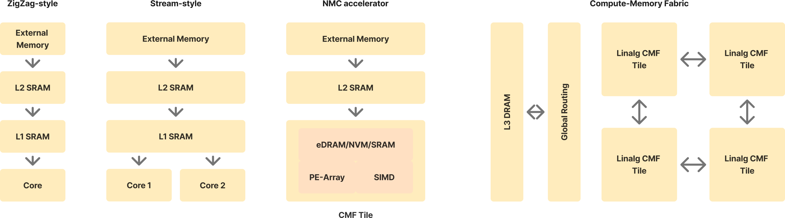
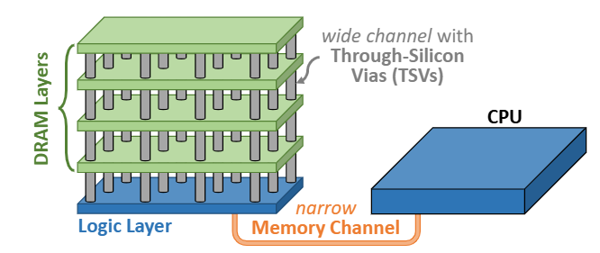
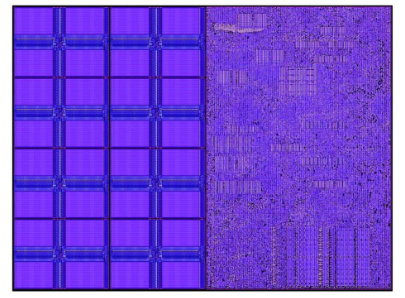
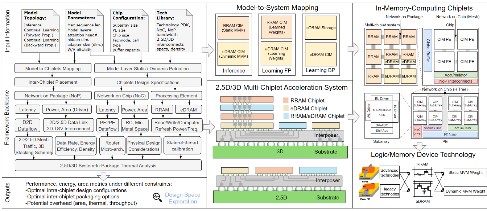

DSE for CMOS 2.0 Compute-Memory Fabrics
Preplanning
Lawrence Quizon
2026-04-06
For the meeting/ ideas for the proposal.
Questions
What is the timeline for the proposal?
What’s the approval process for the proposal?
What are my deliverables for this proposal?
How much freedom do we have to shape the goals of the project?
Difference between a MICAS PhD and an IMEC PhD? I have to pass the standard application process under IMEC?
Ideas for the proposal
My dream: AI should be entirely self-contained in its hardware
- Only training and inference inputs/outputs should be coming in and out of the chip.
- LLMs live in the chip.
Barriers:
- Limitations of 2D memory capacity (like Cerebras WSE)
This is solved by 3D integration like CMOS 2.0.
From ZigZag-style Accelerators to CMF

Note
Most practical accelerators are Stream-style or ZigZag-style.
A lot of academic demonstrations of IMC/NMC fit in the third style.
NoC-style accelerators like WSE exist as samples of (4).
Problem Dimensions
- CMOS 2.0. Do CMF accelerators in IMEC CMOS 2.0 have different properties than existing literature?
- Towards DSE. DSE and analytical modelling of needs the recognition of a regular modellable architecture of CMFs.
- Thermal Problem of 3D stacks. Thermal limits are lowered by 3D integration but approached closer by high memory bandwidth. We also need to add this to the modelling and simulation.
- Heterogenous Computational Memory. 3D integration allows many types of memory which are not all accounted for by CACTI and ZigZag. We need to develop special constraints to take care of the needs of the different memory types. Additionally, memory and processing can be the same exact thing.
- Special Memory Management. Special techniques for memory management and bandwidth maximization exist for 3D memories. Existence/absence thereof must be accounted for in the modelling.1
Specifics and Implementation
Potential DSE/Modelling Framework
Requirements:
- NoC-style dataflow topologies (mesh, torus, etc.)
- Flexibility and generality (on the level of ZigZag or Timeloop, not ad-hoc)
- Modelling of heterogenous regular or computational memory types
- Thermal modelling
Insights:
- Loop ordering doesn’t feel as powerful if memory is no longer hierarchical
- Graph techniques can work
- MARP + coloring - adjacent operations cannot be on the same tile
Idea: Build on both ZigZag and CIMLoop
Building on ZigZag
Plan: Extend ZigZag to account for NoC-style compute-memory fabrics.
Relevant extensions:
- ZigZag-LLM - we target LLM acceleration and GNNs1
- MARP + Stream - multicore compute-memory fabric efficiency
- ZigZag-IMC - account for special dataflows available in IMC for ZigZag2
I’ve found that it might be better to treat ZigZag as “core” for latter extensions, like MICAS is doing now.
Building on CIMLoop
CiMLoop - Built off Timeloop + Accelergy - Uses statistical distributions for quick modelling estimates.
ZigZag - Current State
Looking into ZigZag, the project’s direction seems to be:
- Mei1 - Original cost estimation + DSE
- Sun - IMC extensions (ZigZag-IMC)
- Symons - Main repo maintainer, Stream
- Geens - LLM-specific DSE (ZigZag-LLM)
Project Visions
Scope depends on how large the project’s proposal actually is
Path to self-contained Training and Inference
Goal: Avoid off-chip data movement completely
| LLM | INT8 | INT4 |
|---|---|---|
| Deepseek v3 | 156G | 78G |
| Llama-2 | 17.5G | 8.75G |
| Mistral 7 | 1.825G | 0.9G |
Would be nice to be able to demonstrate the SLMs in a fully self-contained demonstration1 2 on CMOS 2.0
Practical enablers:
- MARP - increases spatial utilization
- 5PP3 - Practically, weight movement between “cores” (tiles) was only needed in 5 neighboring tiles for CNNs. How about nowadays?
Specifics, Details
Near-Memory Compute with Buffer Memory Above
We can utilize NoC-based accelerator architectures1 as effective architectures on 3D compute-memory fabrics. They:
- Place compute near large global buffers in a scalable architecture
- Come with mapping algorithms

2DRAM: Explicit Refresh
With explicitly managed memory, we explicitly know when we’re not using the DRAM.
Refreshes typically distributed evenly over all time, \(t_r\approx 64ms\) but you stall DRAM requests every \(64ms/depth\) (\(\sim \mu s\)).
It takes about \(~400n*8192=3.2ms\) for a full refresh for all rows at once.
Goal: interlace the DRAM refresh with the workload scheduling.
Challenge: explicitly control refresh durations as a scheduling constraint in ZigZag.
DRAM: Dark Silicon
DRAM refresh requirement vs temp. can be modelled via Arrhenius model (energy barrier)1 \[t_{ret}(T)=t_{ret}(T_0)\cdot e^{\frac{E_a}{k_B}(1/T-1/T_0)}\] We find that the \(t_r\propto e^{-T}\) and so heating makes refresh cycle constraints more frequent2
The problem is exarcerbated in 3D stacking which traps heat.
Challenge: Account for temperature in workload scheduling
Electrothermal-Hardware-Algo Co-design
Classical co-design models latency and energy vs workload.
If we eliminate the memory wall, we may be bottlenecked by the thermal power budget.
- Must characterize accelerator’s heating effect and schedule power gating/core usage accordingly.
- Thermal simulations model constraints in the loop.
Electrothermal-Hardware-Algo Co-design (2)
Coarse-grid modelling of the thermal stack from a top-level floorplan with a heat-coupling equation \[\mathbf{C} \frac{d\mathbf{T}}{dt} = -\mathbf{G}\mathbf{T} + \mathbf{P}\] Problem: Needs a preliminary top-level floorplan to discretize.
Each block has a specific thermal characteristic (from PrimeTime power estimates).
Timeline
%%| mermaid-format: svg
%%| font-size: 24pt
%%{init: {
'theme': 'dark',
'timeline': {
'fontSize': '24pt'
}
}}%%
timeline
Y1: NMC-NoC (CMF) Architectures Modelling, Survey.
: ZigZag Cost-Model work with CMOS2.0 memory stacks characterization.
Y2: Complete CMF cost-model extensions to ZigZag.
: CMF tile scalable RTL
Y3: CMF tile tapeout.
: Validate - Cost-Model, Workloads, Thermal Characteristics
Y4: CMF tile-based NoC accelerator tapeout.
: Validate - Cost-Model, Workloads, Thermal CharacteristicsTimeline (2)
gantt
section Research Foundations
NMC-NoC + CMF architecture survey :a1, 2027, 6M
CMOS2.0 memory characterization for analytical modelling :a2, after b1, 6M
Initial CMF architectures :a3, after a1, 6M
section ZigZag: DSE & Estimator
Validation vs existing CMF architectures :b2, after a2, 6M
Validation vs CMOS2.0 memories :b3, after a2, 6MTimeline (3)
%%| mermaid-format: svg
%%{init: {
'gantt': {
'fontSize': '12',
'useWidth': '800'
}
}}%%
gantt
title CMF / NMC-NoC Research & Tapeout Roadmap
dateFormat YYYY
axisFormat %m-%Y
section Research Foundations
NMC-NoC + CMF architecture survey :a1, 2027, 6M
CMOS2.0 memory characterization for analytical modelling:a2, after b1, 6M
Initial CMF architectures :a3, after a1, 6M
section ZigZag: DSE & Estimator
Extend ZigZag with CMF cost model :crit, b1, 2027, 1y
Validation vs existing CMF architectures :b2, after a2, 6M
Validation vs CMOS2.0 memories :b3, after a2, 6M
section Silicon
DSE CMF Tile Architecture :crit,c1, after a3, 1y
Tapeout 1 (CMF Tile) :c2, after c1, 1y
DSE CMF Array Architecture :crit, c4, after c1, 1y
Tapeout 2 (CMF Array) :c3, after c2, 1y
Preliminary Characterization
- Based off typical 3D DRAM fabrics and their communication interfaces
- Use Ramulator?
Onur Mutlu Stack
SAFARI group has had decades of work on DRAM-based IMC
- Focuses on accelerating
memsetandmemcpy1 - General workload acceleration (not DNN targeted)
Appendix
Applicability of ZigZag
ZigZag finds its data reuse capability from maximizing temporal reuse and utilization. However, in a fully self-contained CMF, there is no weight movement.
How about activation movement?
To solve activation movement, we take inspiration from 5PP and mesh-style data movement. This is different from ZigZag’s hierarchical transferred data movement (because it, in fact, is strictly single core). Stream’s multicore data reuse assumes that a specific memory level is shared between cores. I doubt this can be the case across tiles.
Demonstrations of Integrated CIM-inference
- Cerebras WSE3 - Full-wafer divided into reticle-limit chips.
- Corsair1 - d-Matrix (company) in IEEE Micro Magazine
- 3D-CiMLet2 - Design-space exploration work by Purdue on 3D integration CiM with different memory types.

3
4Demonstrations of Integrated CIM-inference (2)
Things to look out for 1. Data Routing Techniques 2. Core Arrangement 3. Thermal Considerations 4. 3D integration style/level
CMOS 2.0
- End of area scaling causes 3D stacking.
- CMOS 2.0 is IMEC’s term for its 3D stacking enabled by hybrid bonding interfaces different process layers.
- Specifically, eDRAM process on top of regular process is possible.
- Having high bandwidth connections between eDRAM above and compute below would allow close to ideal compute-memory fabrics.

DSE for CMOS 2.0 Compute-Memory Fabrics